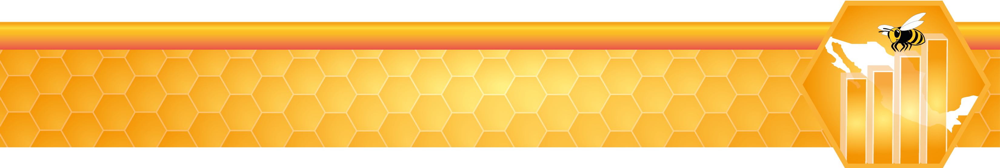

La División Estadística de la FAO (FAOSTAT) tiene publicada información sobre el número de colmenas por país desde el año 1961 y hasta el 2017, la cual se resume para nuestro país, en la tabla y gráfica siguientes:
Cuadro 12. Colmenas en México 1961-2017.
Gráfica 1. Colmenas en México 1961-2017
Fuente:
FAOSTAT. Datos sobre animales vivos. 2017.
En este punto se construyó un gráfico que concentra la producción de miel de las 32 entidades federativas durante el periodo de los años 2003 a 2018, para ello se consideraron los datos de producción en toneladas de miel anual, publicados por el SIAP, denominados Avance mensual de la producción pecuaria.
Cabe señalar que en el periodo de 2003 a 2018, las entidades con mayor producción de miel fueron Yucatán, Campeche, Jalisco, Veracruz y Chiapas.
(Dar doble clic en la entidad federativa de interés para visualizarla de forma aislada).
Los poco más de 43,000 apicultores que hay en México se encuentran registrados en 508 asociaciones ganaderas especializadas en apicultura, conforme a la Ley de Organizaciones Ganaderas, y 110 de otros tipos.
Fuente: Sistema de Información Agroalimentaria de Consulta (SIACON), 2017.
En lo referente a actividades específicas de la cadena productiva apícola, se encuentran datos sobre acopiadores de miel por entidad.
Fuente: Sistema de Información Agroalimentaria de Consulta (SIACON), 2017.
No obstante, al observar la cantidad de unidades económicas exportadoras de miel en el país, se hace notorio que es necesario impulsar esta actividad, ya que los exportadores representan un porcentaje muy pequeño respecto al número de productores en el país.
Fuente: Sistema de Información Agroalimentaria de Consulta (SIACON), 2017.
Con respecto a la crianza de abejas reina y producción de núcleos, también existen pocas unidades económicas dedicadas a estas actividades.
Fuente: Sistema de Información Agroalimentaria de Consulta (SIACON), 2017.
Por otra parte, la certificación de abejas reina garantiza a los productores la calidad genética y sanitaria de las abejas reina que comercializan, evitando con ello la movilización de abejas reina sin control, a efecto de disminuir la transmisión de enfermedades de las abejas. La gráfica siguiente muestra que aún queda mucho por hacer en este tema.
Fuente: Sistema de Información Agroalimentaria de Consulta (SIACON), 2017.
Además de la miel, se producen otros derivados apícolas. El principal subproducto en cuanto a volumen, es la cera. Sus principales usos son en las industrias farmacéutica y cosmética. Yucatán se destaca como el principal productor de cera de abeja a nivel nacional.
Fuente: Sistema de Información Agroalimentaria de Consulta (SIACON), 2018.
En los últimos años, ha venido creciendo la producción de miel orgánica y de otros derivados apícolas. Este tipo de subproductos tienen mayor valor en el mercado, si bien su producción requiere cierto grado de especialización técnica por parte del apicultor. La siguente gráfica muestra los volúmenes de producción de miel orgánica por estado.
Fuente: Sistema de Información Agroalimentaria de Consulta (SIACON), 2017.
Los subproductos mencionados son los propóleos, la jalea real, y el polen. El precio de estos suele ser mucho mayor que el de la miel, dada la dificultad de su obtención. Por ello, se trata de un mercado en el que muchos apicultores aún no incursionan.
Fuente: Sistema de Información Agroalimentaria de Consulta (SIACON), 2017.
En lo referente a la superficie y número de terrenos dedicados a las actividades apícolas, existe una difereciación entre terrenos de tipo ejidal, comunal y privado. Más del 85% de los terrenos apícolas corresponden al tipo de ganadería ejidal.
Fuente: Secretaría de Agricultura y Desarrollo Rural (SADER), 2017.
Que expresados en hectáreas se distribuyen según la siguiente gráfica. Predomina la superficie ejidal dedicada a la apicultura en los estados de Yucatán, Campeche y Quintana Roo.
Fuente: Secretaría de Agricultura y Desarrollo Rural (SADER), 2017.
La exportación de miel mexicana se incrementó en 11.73% en el primer semestre de 2018 en comparación con el periodo homólogo anterior al alcanzar, en valor, 71 millones de dólares (MDD), mientras que en enero-junio del año pasado se contabilizaron 63 MDD.
Lo anterior, gracias a las políticas públicas, destinadas a incentivar esta actividad, que puso en práctica la SADER, así como al esfuerzo de los productores apícolas nacionales.
Según estimaciones de la dependencia, con datos del Banco de México, la miel es uno de los principales productos pecuarios de nuestro país que se venden en el extranjero y durante el 2017 se consiguieron ventas por 105 MDD.
En este caso, se informó que el Servicio Nacional de Sanidad, Inocuidad y Calidad Agroalimentaria (SENASICA) cuenta con el Programa de Monitoreo de Residuos Tóxicos y Contaminantes para certificar que la miel de abeja no contenga contaminantes físicos, químicos o microbiológicos, que pudieran afectar la salud de los consumidores y la calidad del producto.
Personal del organismo de la SADER recolecta muestras aleatoriamente en las unidades de producción de miel orgánica o convencional del país y las canaliza al Centro Nacional de Servicios de Constatación en Salud Animal (CENAPA) para su análisis.
En los laboratorios del CENAPA, los técnicos realizan pruebas con equipo moderno para constatar que la miel cumple con los estándares más altos de inocuidad que demandan los mercados de México y el mundo.
Los análisis que se practican están basados en los lineamientos establecidos en las regulaciones del Codex Alimentarius de la FAO y la Unión Europea, relacionados con los Límites Máximos de Residuos para asegurar la inocuidad y calidad del producto.
La apicultura mexicana produce, además de miel, otros productos como polen, jalea real, propóleos e incluso su apitoxina o veneno, el cual resulta benéfico para la población, por sus propiedades nutricionales y terapéuticas.
Esta actividad constituye una importante fuente de empleos e ingresos, se ubica entre los tres primeros lugares en el subsector pecuario como generadora de divisas por concepto de la exportación de miel.
México es hábitat de una amplia variedad de abejas, calculada en cerca de dos mil especies, lo que es muy benéfico ya que estos insectos realizan la polinización del 87% de las 352 mil especies de plantas con flor que existen en nuestro planeta; entre ellas un tercio de las especies agrícolas.
En los últimos 10 años México ha registrado una producción promedio de 57 mil toneladas del producto; hasta mayo de 2018 se reportan 28.7 mil toneladas, 34 por ciento más de lo reportado en mayo del 2017.
Es por ello, que el SENASICA, la Secretaría de Medio Ambiente y Recursos Naturales (SEMARNAT) y la Universidad Nacional Autónoma de México (UNAM), llevan a cabo acciones para proteger la actividad apícola, en coordinación con autoridades homólogas de Estados Unidos y Canadá.
Fuente:
SADER. Nota de Prensa. Agosto, 2018.
A continuación, se presentan algunos datos sobre el valor de las exportaciones de miel mexicana en los últimos años:
Cuadro 13. Exportaciones Mensuales de Miel, 1993-2018
Por otra parte, si se analiza el comportamiento de las exportaciones mensuales de miel en México mediante un gráfico historico o serie de tiempo, puede observarse la tendencia cíclica del volumen de ventas en dólares, mostrando picos entre los meses de abril-julio de cada año, y marcados descensos en las exportaciones en los meses de agosto-noviembre, que refleja las épocas de mayor floración y el periodo inmediato a la mayor produción y extracción de miel (en el que las colmenas apenas comienzan a recuperarse), respectivamente:
Gráfica 13. Exportaciones Mensuales de Miel, 1993-2018
Fuente:
BANXICO. Sistema de Información Económica. Exportación de Productos Agropecuarios (Miel). 2018.
Los principales destinos de las exportaciones pueden apreciarse en la siguiente gráfica:
Fuente:
INEGI. Estadísticas de Comercio Exterior. 2018.
En contraste, la importación de miel es mucho menor en comparación con las exportaciones. En los últimos 15 años, sólo en 2010 se registró un máximo en este rubro.
Fuente:
INEGI. Estadísticas de Comercio Exterior. 2018.